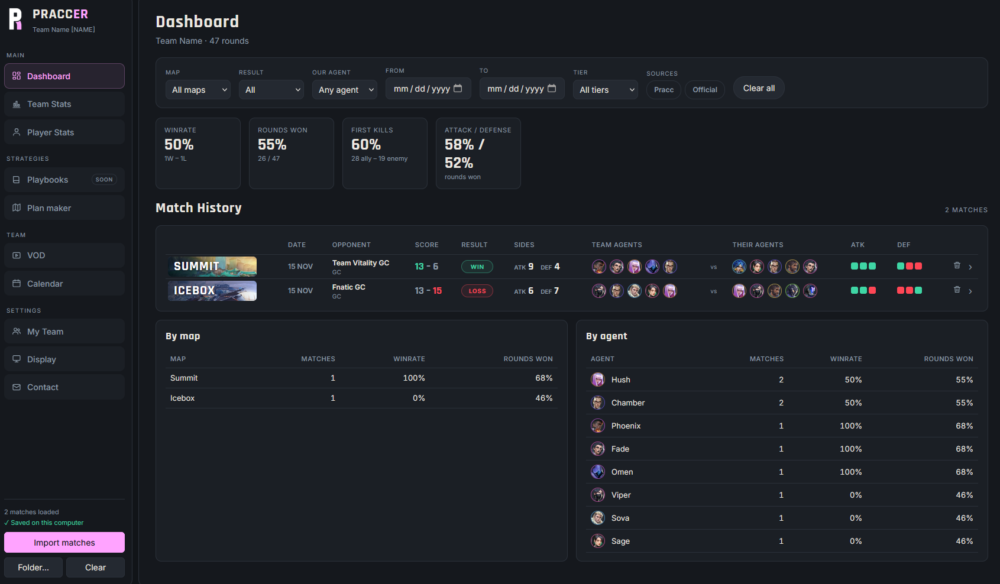

PRACCERprivate analyst tool
A scrim tracker for one team.
Praccer is a private tool I built for my VALORANT work. It turns the data from our practice matches into the statistics we use to review our scrims and prepare for competition.
How it works
- An Overwolf app records match events during our scrims and exports them to a JSON file.
- Praccer reads that file locally and sorts the data by match, round and player.
- The statistics are computed and shown to the team for review after each session.

Why Praccer needs the Riot API
Right now Praccer is limited to what an Overwolf app can capture during a match. The Riot API would give us the full match data after each game, which we cannot get any other way:
- Damage dealt and received per player and per round, for stats such as ADR and trade efficiency.
- Player positions at key events, so we can review positioning and setups round by round on the map.
The API would only be used for matches played by our own team, after each match has ended. The number of players is small (one roster) and requests are made only when we import a new match, so the volume stays very low. Each player's data is only accessed with their consent.
What it measures
| Stat | Description |
|---|---|
| K / D / A | Kills, deaths and assists per player and per map. |
| HS% | Headshot percentage. |
| Compositions | Agent compositions played and their results. |
| Round Swing | How much each player's actions changed the outcome of a round. |
| Rating 1+ % | Share of matches where a player reaches a rating of 1.0 or more. |
The highlighted rows are a sample of custom metrics I built for our own analysis.
Usage & data
- Only my teammates and I use Praccer. It is not distributed or offered to the public.
- It is free and not monetised in any way.
- It only uses data from our own scrims and players. The data is processed locally and never sold or shared.
- We only use it for review after matches. It gives no in-game advantage.
Contact
Discord: terreurgrunt